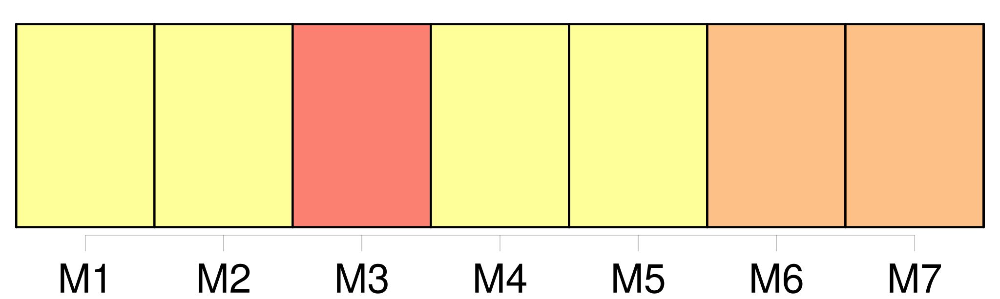
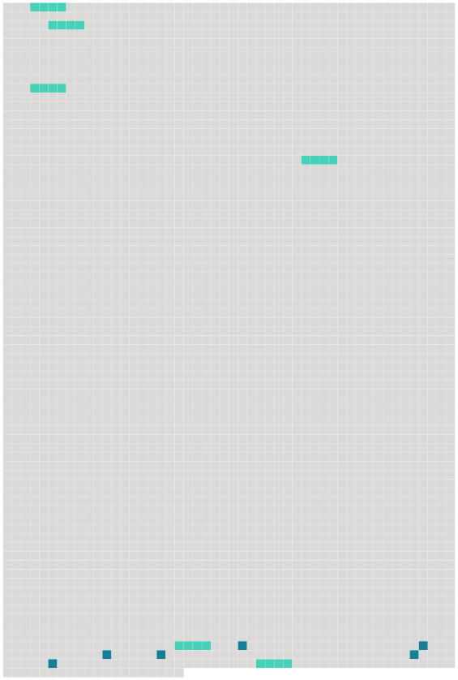

Longueur nb maillons : 12 mentions |
  |
De la Tutelle [des Père et Mère] [4 phrases]
Après la dissolution du mariage arrivée par la mort naturelle ou civile de l'un des époux, la tutelle des enfans mineurs et non émancipés appartient de plein droit au survivant [des père et mère] [18 phrases]
397 [20 phrases] Ce conseil sera convoqué soit sur la réquisition et à la diligence [des parens du mineur] , de ses créanciers ou d'autres parties intéressées, soit même d'office et à la poursuite du juge de paix du domicile du mineur. [134 phrases]
[Les père et mère] , tant qu' [ils] ont la jouissance propre et légale des biens du mineur, sont dispensés de vendre les meubles, s' [ils] préfèrent de les garder pour les remettre en nature. Dans ce cas, [ils] en feront faire, à [leurs] frais, une estimation à juste valeur, par un expert qui sera nommé par le subrogé tuteur et prêtera serment devant le juge de paix.
[Ils] rendront la valeur estimative de ceux des meubles qu' [ils] ne pourraient représenter en nature. [1 phrases]
Lors de l'entrée en exercice de toute tutelle, autre que celle [des père et mère] le conseil de famille réglera par aperçu, et selon l'importance des biens régis, la somme à laquelle pourra s'élever la dépense annuelle du mineur, ainsi que celle d'administration de ses biens. |
 |
La ressource peut être téléchargée sur la page Ortolang
Si vous avez des questions ou vous voyez des erreurs, merci d'envoyer un mail à silvia.federzoni89@gmail.com
Site développé par S. Federzoni (contact)